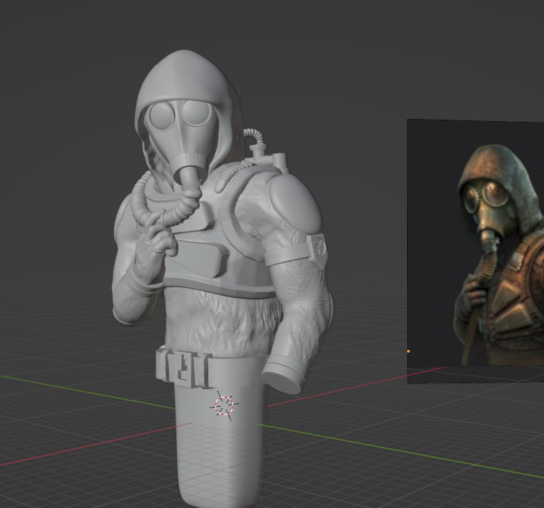
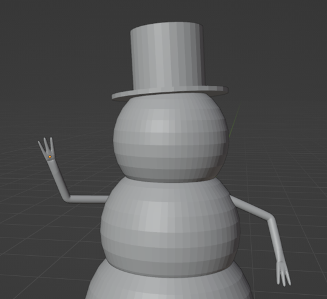
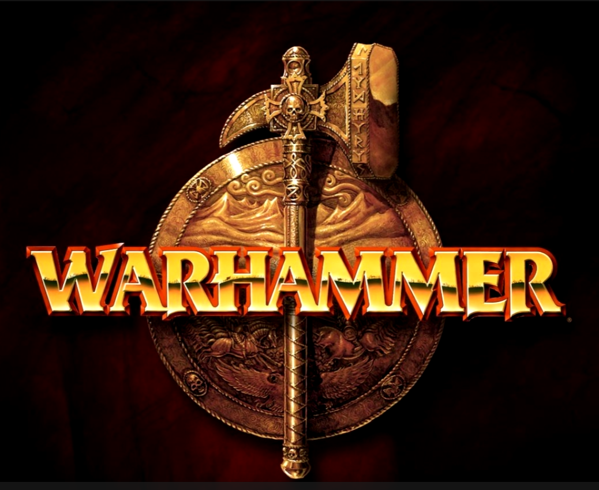
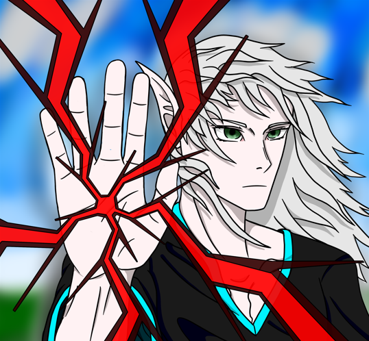
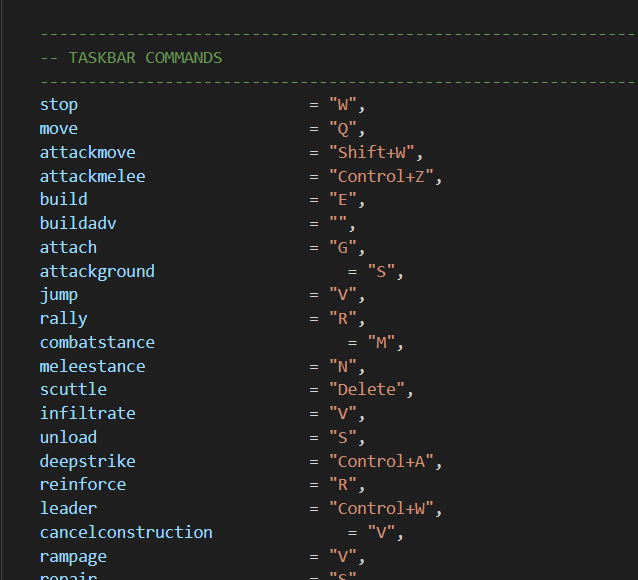

"Stalker model of the first stage of development for the design of a wooden phone holder. My only paid work.
Later, my model was processed and formatted for transfer to a format for wood carving"

" The snowman was his project assignment after studying the topic of Blender3D in the school curriculum. Then I
got acquainted with the basic functions of the Blender3D program. Earning maximum points for this work."

"A video production for a school on the topic "My Hobby". I did a very large amount of work in 3 days, painting
the model from scratch, shooting footage, and editing the video into the final result."

"I drew this picture at the request of a friend of mine. Although it ultimately didn't work out as his avatar, it was a solid practice in drawing for me, and a great experience in fulfilling orders."

"This is my curated list of favorite hotkeys that I use while playing Dawn of War."